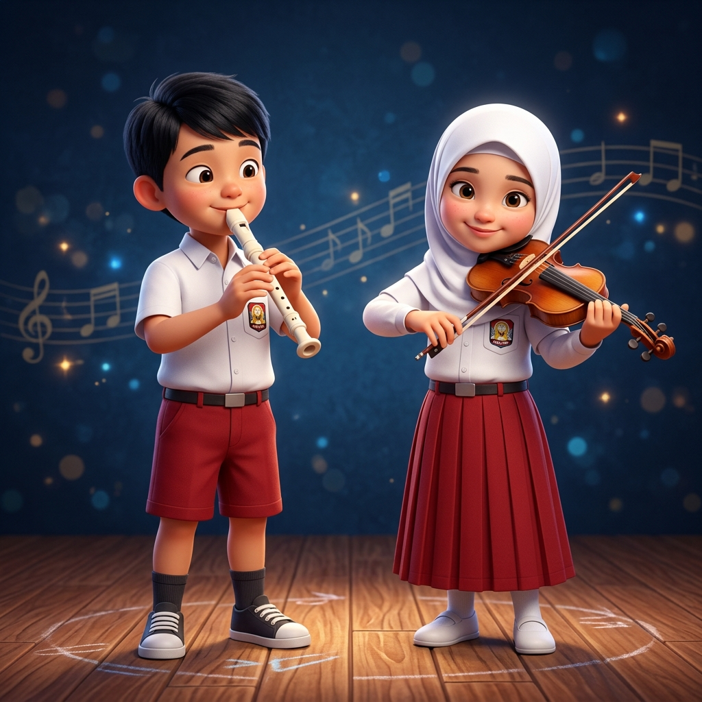

Selamat datang di misi pembelajaran interaktif! Silakan pilih kartu sesuai dengan kelompok gaya belajarmu hari ini.
Mengerjakan tantangan dengan mengamati gambar dan kartu visual.
Mengerjakan tantangan dengan mendengarkan rekaman dan simulasi suara.
Mengerjakan tantangan dengan aktivitas fisik menyusun dan menggeser benda.
Wah, telingamu sangat peka seperti pahlawan super! Setiap suara dan nada adalah kunci ajaibmu untuk belajar banyak hal baru.
Kamu adalah sang Pendengar Hebat! Anak dengan gaya belajar Auditori paling mudah memahami pelajaran dengan cara mendengarkan. Kamu mungkin sangat suka mendengarkan dongeng, bernyanyi, menghafal lewat lagu, atau mengobrol bersama teman dan guru. Suara yang kamu dengar akan menempel kuat di ingatanmu!
"Teruslah bernyanyi, bercerita, dan mendengarkan hal-hal hebat. Jadikan suaramu sebagai kekuatanmu untuk meraih mimpi. Semangat belajarnya, jagoan!"
Aplikasi pembelajaran interaktif (Termasuk video & lagu edukasi anak).
Platform untuk proyek pembelajaran hands-on dan mendengarkan cerita.
Laboratorium virtual untuk eksperimen (Fokus pada suara dan pendengaran).
Hebat sekali! Matamu bisa menangkap warna dan gambar bagaikan kamera canggih! Dunia ini penuh dengan warna untukmu.
Kamu adalah sang Pengamat Cerdas! Anak dengan gaya belajar Visual sangat mudah mengingat apa yang mereka lihat. Kamu menyukai gambar, warna-warni, poster, grafik, dan video animasi. Saat kamu melihat sesuatu yang indah dan rapi, otakmu akan merekamnya dengan sangat cepat!
"Ayo warnai dunia belajarmu dengan kreativitas tanpa batas! Jangan takut untuk mencoret-coret dan menggambar masa depanmu. Tetap semangat, sang pelukis hebat!"
Aplikasi pembelajaran interaktif (Termasuk akses gambar & game visual).
Platform untuk proyek pembelajaran hands-on (Fokus pada animasi dan warna).
Laboratorium virtual untuk eksperimen berbasis grafis dan pemetaan.
Wow, energimu sungguh luar biasa seperti atlet juara! Seluruh tubuhmu siap membawamu belajar lewat petualangan seru.
Kamu adalah sang Penjelajah Aktif! Anak dengan gaya belajar Kinestetik tidak suka hanya duduk diam. Kamu belajar paling baik saat tangan dan tubuhmu bergerak. Menyentuh benda, berlarian, merakit mainan, dan melakukan eksperimen langsung adalah cara paling ampuh buatmu untuk pintar!
"Dunia ini adalah tempat bermain dan laboratorium raksasamu! Jangan pernah lelah bergerak, mencoba, dan berkreasi. Maju terus, sang penjelajah hebat!"
Aplikasi pembelajaran interaktif yang harus disentuh, ditarik, dan digeser.
Platform untuk proyek pembelajaran hands-on (Senam dan Eksperimen Nyata).
Laboratorium virtual untuk eksperimen langsung di layarmu.
Informasi mengenai gaya belajar ini didasarkan pada berbagai teori pendidikan dan psikologi belajar.
Sumber utama yang digunakan meliputi: